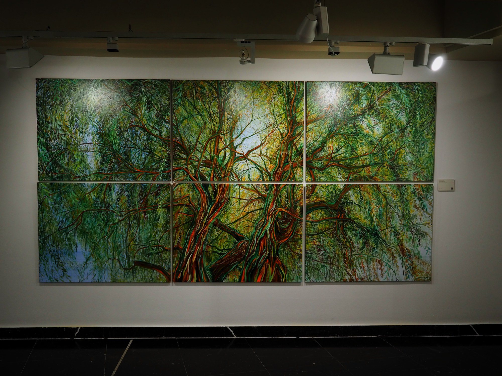
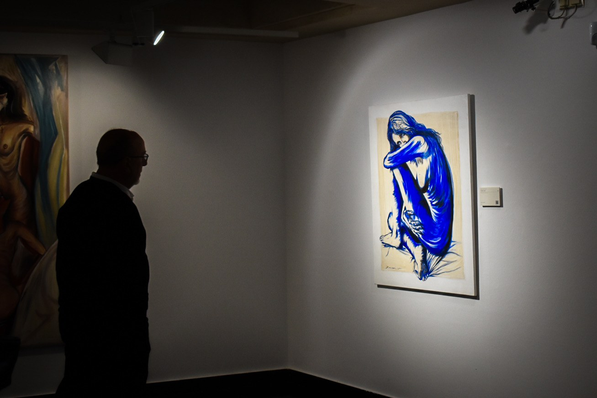
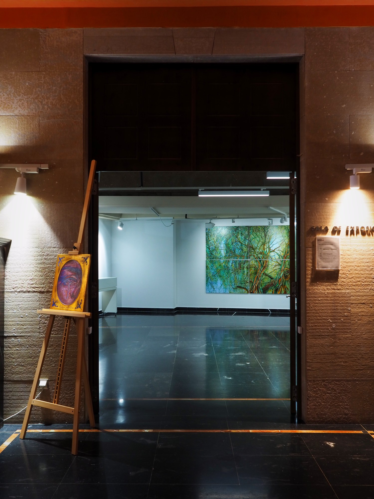
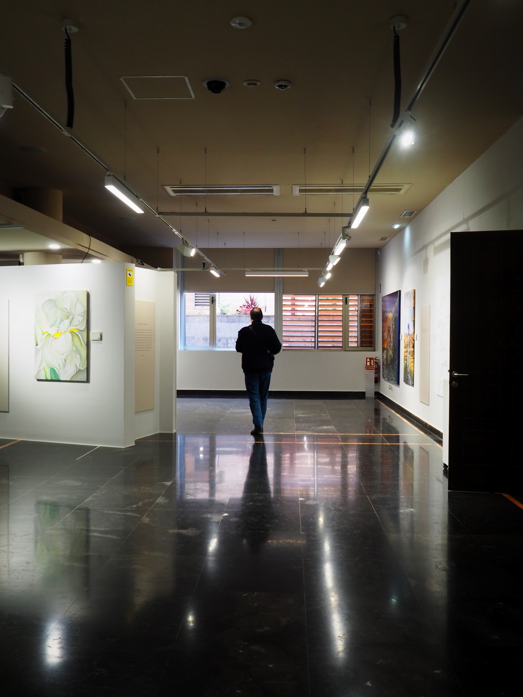
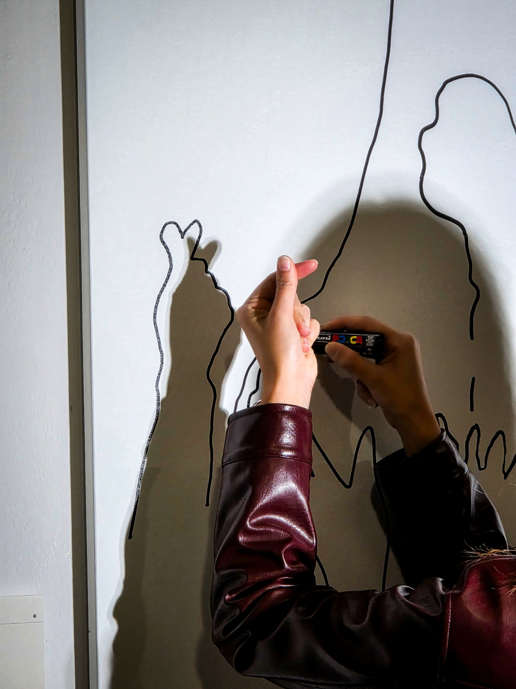

Itinerancia
Reflejos y sombras busca sala para 2027.
Es la primera exposición individual de Javier Sanagustín Moreu. Catorce obras, trece óleos y una técnica mixta, pintadas entre 2021 y 2026. Se presentó en el Palacio de Villahermosa, Fundación Ibercaja, Huesca, del 8 de octubre al 11 de noviembre de 2026, dentro del programa del 150 aniversario de la Fundación.
Qué incluye
Catorce obras en cinco tramos: apertura, bloque paisaje, bisagra, bloque figura y cierre. Cinco son reflejos y nueve, sombras.
Textos de sala. Cada obra tiene un texto, su proceso y su referencia, que se leen con un código QR en la sala.
Catálogo. Primera edición, 2026. ISBN 978-84-09-90620-8. Depósito legal HU 214-2026. 20 €.
Performance. Participativa, de tres estaciones: la sombra, el reflejo y una pregunta escrita. El resultado se queda en la sala.
Taller para grupos escolares, impartido por el artista, de 6 a 13 años, hasta 25 alumnos, de 45 a 60 minutos.
Espacio
Las catorce obras suman unos 19 metros lineales de pared, sin contar el espacio entre ellas. La pieza más ancha es Entre fragmentos, un políptico de 348 cm. La más alta es Sin distancia, de 195 cm.
Condiciones
Préstamo, transporte, montaje y seguro, a acordar con cada sala. Escribe con las fechas disponibles y las medidas del espacio.
Material
Web de la exposición ↗, con la ficha completa de cada obra.
Visita con el artista, a petición.
Contacto





